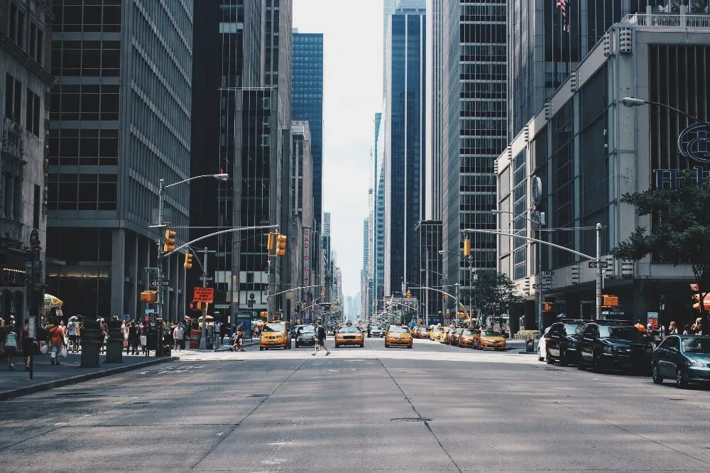

Yếu tố đầu tiên giúp cư dân gắn bó lâu dài với một đô thị chính là bầu không khí trong lành. Thành phố chú trọng phát triển mảng xanh xen kẽ trong từng khu dân cư.

Những điểm sáng về quy hoạch sinh thái:
- Hơn 30% diện tích đô thị dành cho cây xanh và hồ điều hòa.
- Hệ thống phân loại rác thải thông minh đồng bộ toàn thành phố.
- Khuyến khích sử dụng xe buýt điện và xe đạp công cộng.